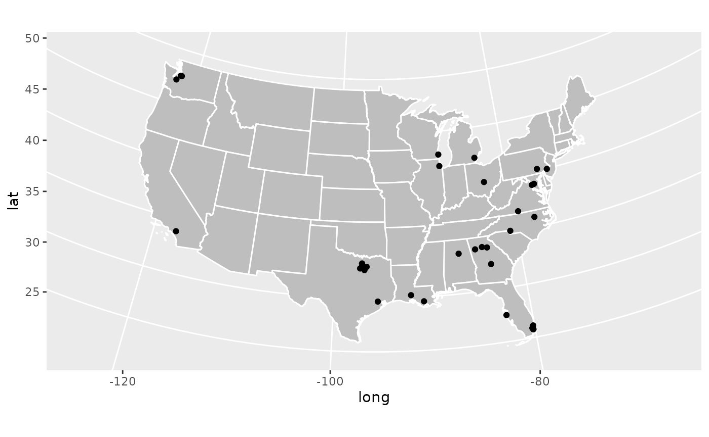
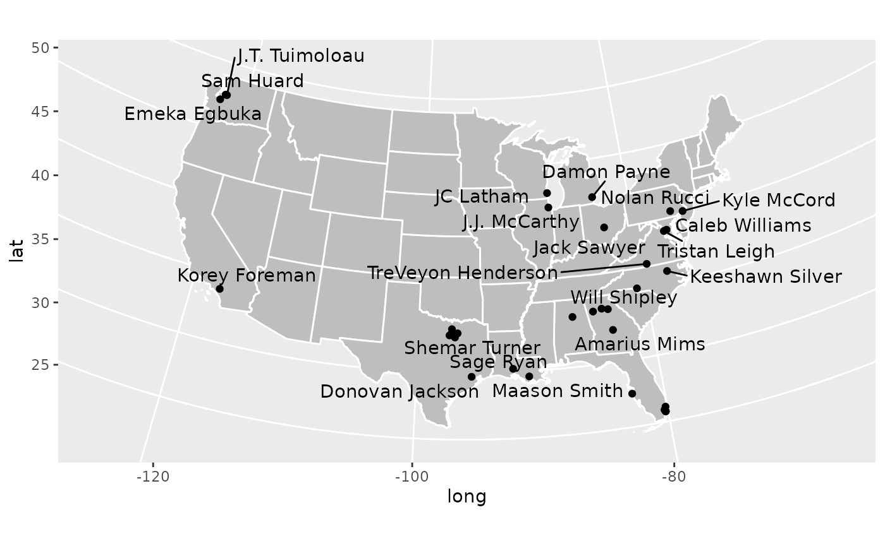
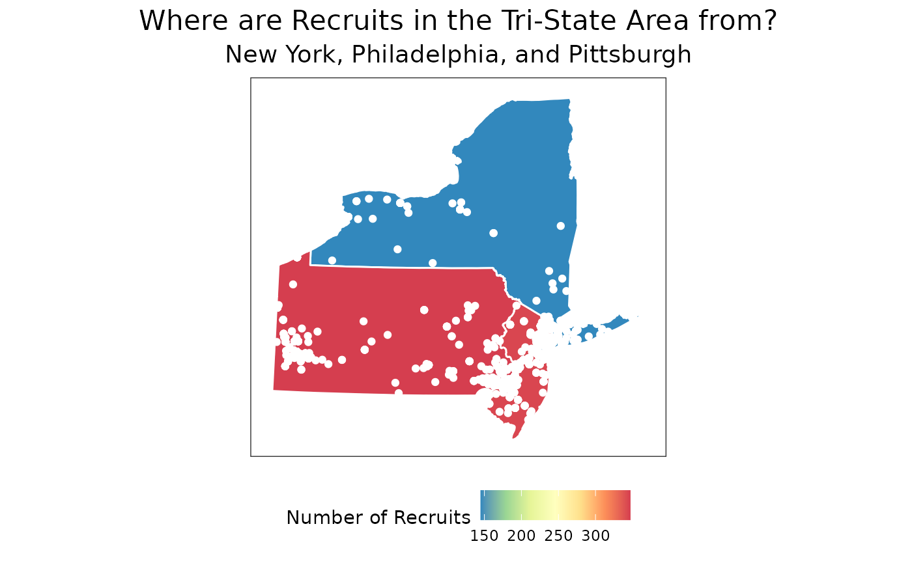

Intro to Visualizing Recruiting Geography
Conor R.
McQuiston


Source: vignettes/map-tutorial.Rmd
map-tutorial.RmdThe best high school football talent in America is not even across
the country. Some states produce bunches of talent, such as Texas,
Florida, and California, while other states are hardpressed to produce
more than a handful every couple years, such as Montana, Maine, and the
Dakotas. So it would be a good idea for any program to know where they
are, and a really easy way to communicate that is with some slick
visualizations. Today we’ll be using the cfbfastR package
to get geographic data about recruits and the urbnmapr
package to easily show them on maps.
I’m going to assume you have R and RStudio installed throughout this tutorial, so if you don’t go to cfbfastR founder Saiem Gilani’s tutorial who goes through that process.
Let’s start off with loading all the packages we’ll need:
All of these packages are available on CRAN and thus can be installed
by running install.packages("your_package_here").
Now that we have all of our necessary packages loaded, we are free to start making some recruiting viz!
Where are the Top Players of the Class of 2021 from?
We’ll start off by trying to answer that question. On the surface of it, the question seems pretty simple but implicitly has two other questions we much answer:
- How are we defining Top Players?
- How do we want to display this information?
There’s about a bajillion different ways to answer these two questions, for example we could group the top 74 RBs by state and throw those counts on a table. For simplicity’s sake though let’s define the top players as 5 Stars, as defined by 247Sports, and since I think its easier to understand geography visually let’s make a map. Also this is not interactive and you cannot stop me from doing what I want.
The first thing we have to do is load in the data, and
cfbfastR has a nice function which allows us to do just
this, cfbd_recruiting_player() which gives us info on every
rated player in a class! Let’s see what sort of data we get from it.
str(cfbd_recruiting_player(year = 2021))## cfbfstR_ [2,666 × 19] (S3: cfbfastR_data/tbl_df/tbl/data.table/data.frame)
## $ id : chr [1:2666] "115742" "115743" "115744" "115745" ...
## $ athlete_id : chr [1:2666] NA "4431274" NA "4566154" ...
## $ recruit_type : chr [1:2666] "HighSchool" "HighSchool" "HighSchool" "HighSchool" ...
## $ year : int [1:2666] 2021 2021 2021 2021 2021 2021 2021 2021 2021 2021 ...
## $ ranking : int [1:2666] 1 2 3 4 5 6 7 8 9 10 ...
## $ name : chr [1:2666] "Quinn Ewers" "Korey Foreman" "JC Latham" "J.T. Tuimoloau" ...
## $ school : chr [1:2666] "Southlake Carroll" "Centennial" "IMG Academy" "Eastside Catholic" ...
## $ committed_to : chr [1:2666] "Ohio State" "USC" "Alabama" "Ohio State" ...
## $ position : chr [1:2666] "QB" "DL" "OT" "DL" ...
## $ height : num [1:2666] 75 76 78 76.5 77 ...
## $ weight : int [1:2666] 206 265 305 277 248 283 210 315 245 190 ...
## $ stars : int [1:2666] 5 5 5 5 5 5 5 5 5 5 ...
## $ rating : num [1:2666] 1 0.999 0.999 0.999 0.998 ...
## $ city : chr [1:2666] "Southlake" "Corona" "Oak Creek" "Sammamish" ...
## $ state_province : chr [1:2666] "TX" "CA" "WI" "WA" ...
## $ country : chr [1:2666] "USA" "USA" "USA" "USA" ...
## $ hometown_info_latitude : num [1:2666] 32.9 33.9 42.9 47.6 39.9 ...
## $ hometown_info_longitude: num [1:2666] -97.1 -117.6 -87.9 -122 -82.8 ...
## $ hometown_info_fips_code: chr [1:2666] "48439" "06065" "55079" "53033" ...
## - attr(*, "cfbfastR_timestamp")= POSIXct[1:1], format: "2025-08-25 18:55:54"
## - attr(*, "cfbfastR_type")= chr "Player recruiting info from CollegeFootballData.com"There’s a lot here, but the basics are we get some IDs that we can
merge on other cfbfastR datasets, basic information on each
player, their high school, their rating and stars, their hometown, and
geographic information about their hometown. A small issue we have is
that for some reason the hometown_info_longitude and
hometown_info_latitude variables which contain the
longitude and latitude of each town are saved as characters (read: text)
instead of numbers. But since we understand the data we’re looking at
now, we can go ahead filter out for the set of players we
want (5 stars) and mutate the data to make a new variable
so that have longitudes and latitudes as numbers.
#Save the class of 2021 to its own variable
co_2021 <- cfbd_recruiting_player(year = 2021)
#Now let's manipulate the data so that its what we want
top_recs_co_2021 <- co_2021 %>%
dplyr::filter(stars == 5) %>% #filter gives you the data which fulfills a condition
dplyr::mutate( #mutate creates new variables within a dataframe
latitude = as.double(hometown_info_latitude),
longitude = as.double(hometown_info_longitude)) %>%
dplyr::select(name, latitude, longitude, state_province) %>% #This just selects the columns we care about
dplyr::distinct() #this is to get rid of duplicate namesA few quick programming notes:
- I save the Class of 2021 dataset as its own object. This is so that if we make a mistake whilst manipulating the data we don’t have to load in the data again. For this specific problem its not a big deal, but when you deal with larger datasets that take longer to load its a good convention to do.
- The
%>%characters are called a pipe and can be read as “and then.” As an example, we would read the above chunk as “We load in the Class of 2021 data and then we filter to only the 5 stars and then we create the newlongitudeandlatitudevariables. - The function
as.doubletakes something and transforms it into a double (a number with a decimal points). For example,"8.0"and8both become8.0usingas.double() - At the end I
selectthe columns which have the information we care about. This gets rid of extraneous data. This isn’t super important for this dataset in particular, but is a practice I find useful when working with larger datasets so I don’t take up too much memory. - The
distinctfunction at the end gets rid of duplicate rows. We do this because recruiting data fromcfbd_recruiting_playercan at times be messy, especially when players have ratings which change later in the processs.
So now let’s make a map of it. The most sensible thing to do seems to
just put points on a map, one for each 5 star. This will tell us where
every 5 star is, and if we’re lucky maybe we’ll get whiffs of larger
trends. The easiest way to do this is to use the built in
states dataframe that comes with urbnmapr and
throw it in a plot. Because of how urbnmapr places Alaska
and Hawai’i we can’t nicely place points in these states, so we’ll have
to ignore these.
Before we look at the code there’s a couple ggplot2
basics I would like to cover first
-
ggplot2uses+instead of%>%as a pipe for reasons that are beyond my feeble mind’s capabilities. - You place individual plot elements with the
geom_functions. For example if you want to place a scatter plot that’sgeom_point, for bars it’sgeom_bar, for lines itsgeom_line, etc. Specifically for maps we usegeom_polygon - We map variables from a given data frame to geoms using the
aesfunction. - The world isn’t flat, but plotting maps in R defaults to a flat projection (Mercator) which can cause some pretty massive distortion. We can fix this by changing to another projection which better maintains an area’s proportions (an Albers projection in this case)
cont_48 <- states %>%
dplyr::filter(!state_name %in% c("Alaska", "Hawaii")) #This means "Filter for states whose names aren't in the group of 'Hawaii' and 'Alaska'"
ggplot()+ #ggplot uses + instead of %>% as a pipe for some reason.
geom_polygon(data = cont_48, mapping = aes(x = long, y = lat, group = group), color = 'white', fill = 'grey')+ #color controls the color of borders, fill controls the color of things inside the border
geom_point(data = top_recs_co_2021, mapping = aes(x = longitude, y = latitude), color = 'black')+
coord_map(projection = 'albers', lat0 = 39, lat1 = 45) #This is the one that changes the projection
Great! We have successfully made a map where we can see where every
single 5 star recruit in the Class of 2021 is from. We can see some
overall trends, a lot in the southeast, a bunch collected in one spot in
North Texas (that’s the Dallas-Fort Worth metro), and a surprising
amount in Washington state (that’s Seattle). But what if we want to
actually see who each of these dots represent? That’s not too hard!
There is a geom_text geom which allows us to place text
onto a plot given x and y coordinates. But with a plot like this we’ll
probably get some overlap and it’ll be hard to read.
To avoid that, we’ll bring in the ggrepel library, which
is on CRAN, which makes sure text doesn’t overlap on
ggplot2 plots. Uncomment the first line if you don’t have
this package already installed.
#install.packages('ggrepel')
library(ggrepel)
ggplot()+
geom_polygon(data = cont_48, mapping = aes(x = long, y = lat, group = group), color = 'white', fill = 'grey')+
geom_point(data = top_recs_co_2021, mapping = aes(x = longitude, y = latitude), color = 'black')+
geom_text_repel(data = top_recs_co_2021, mapping = aes(x = longitude, y = latitude, label = name), color = 'black')+
coord_map(projection = 'albers', lat0 = 39, lat1 = 45)
Now this plot is a little busy, and eagle eyed readers will notice
that several names are missing from this plot. This is because there are
more overlaps than ggrepel’s algorithm can handle. This can
be adjusted but it gets busier. Consider the task to improve this plot
and make it more readable your homework!
What have we learned in this section? 1. How to load in recruiting
class data using the cfbd_recruiting_player() function in
the cfbfastR package 2. How to use some basic
dplyrdata wrangling functions in mutate,
filter, and select 3. How to use basic
ggplot2commands 4. How to use the urbnmapr
package to easily create maps
Which States Have the Most FBS Recruits Recently?
This is cool that now we can place the top prospects on a map, but what if we are more interested in larger trends? We noticed that a lot of the top kids are generally from the south east, but does that hold true for all prospects? This is a question we can answer using the data we have!
So we have a straight forward question that doesn’t leave much room for interpretation, but we need to figure out how to go about answering it. We could use the data we’ve already loaded in and see where recruits are from for the 2021 class. But because of COVID, the 2021 class is odd, and an idea I want you dear reader to understand is that recruiting is a system. As families move around and populations shift different areas get better or worse in terms of recruiting talent. And this isn’t even considering shifting recruiting strategies and coaching changes to better or worse recruiters. Because of that, it’s not particularly useful to look at a single year of data.
With this in mind, let’s load multiple years of recruiting data into
a single dataframe, group the prospects by the state they’re from, and
then we can throw it up on a map! To accomplish this first task, we’re
going to make a for loop. It’ll look like
for(i in 2017:2021) which means we’ll first say
i = 2017 then do some stuff, then i = 2018 and
do the same stuff and repeat this process until we get to
i = 2021. This is a bad habit, generally very slow in R,
and should be avoided. We are doing it here because the
cfbd_recruiting_player() function is pretty fast so its not
that slow to do a for loop and this is designed for
learning and for loops are easy to read and understand.
Generally, if you want to do the same thing over and over again you
should use the purrr package which is much more
optimized.
What we’re going to do is we’re going to look at the past 5 recruiting classes (2017, 2018, 2019, 2020, and 2021) and smush them all together into a single dataframe so its easier to work with. In the way we explained it earlier, we’re telling the little people in the computer to set the year to 2017, then they’ll get all the players in the 2017 class, then they’ll set the year to 2018, get all the players in that class, and then smush it to the earlier players. We’ll repeat this until we get to 2021.
recruiting_classes <- data.frame() # this makes an empty dataframe
for(i in 2017:2021){
recruiting_classes <- dplyr::bind_rows(recruiting_classes, cfbd_recruiting_player(year = i)) #This adds the rows from cfbd_recruiting_player() to the existing rows so we get all players
}Sick, now we have all the players in the 2017-2021 classes. We want to eventually get the amount of recruits for every state in this time range, but remember from earlier that the data can get pretty messy and we don’t want to double count. So how are we going to clean it? What we’ll do is make a simple assumption that if, for example, there are 2 WRs named Daniel Jackson from the great state of Texas in 2017 then that is a duplicated entry. I feel fine about this and if you don’t, well you’re not writing this, it isn’t interactive, and I’m not your friend so you can’t tell me what to do.
So we’ll do this quick clean up and then we’ll group the players by state and get some counts.
clean_rec_classes <- recruiting_classes %>%
dplyr::select(year, name, position, state_province) %>% #Get the data that we want
dplyr::distinct() %>% #Get rid of duplicated rows
dplyr::group_by(state_province) %>% #Group the data by each state
dplyr::summarise( #Summarise works like mutate, but instead of adding on a new column it creates a single row of variables for each group
count = dplyr::n() #n() is a function which returns the number of occurrences of each group in the larger dataset
)We introduced some new functions here, but I think
group_by is pretty straightforward so I won’t explain that
much further. summarise (you can also use
summarize if you want) and n() however may not
be as obvious. So if it’s not clear, let’s take a quick peek at the
data:
dplyr::glimpse(clean_rec_classes)## Rows: 70
## Columns: 2
## $ state_province <chr> "AB", "AK", "AL", "AR", "AS", "AUST", "AZ", "BC", "BELG…
## $ count <int> 3, 5, 727, 168, 8, 40, 377, 10, 1, 2002, 8, 152, 87, 94…So now we have the recruit count for every state from 2017-2021! You
may be confused by the "" and "AB" groups, but
those refer to non-US provinces, which will end up being dropped.
We have the data, now we want to visualize this data. How should we go about it. We could just make a bar chart, and if we really wanted to emphasize the small and large differences between states this is a totally valid decision. But there’s some issues here. For one we totally lose the spatial aspects of recruiting in a bar chart, which I believe is important for our specific problem. Also, I think it’s boring. So what I want to do instead is represent this on a map using a color scale to show how many recruits came from the given state, if you care about jargon this is called a choropleth. The major issue with this is that humans are just bad at telling minute differences in color so we will only really get directional ideas of how many recruits from a given area. We won’t be able to tell if Tennessee has 3 more recruits than North Carolina, but we will be able to tell if Texas produces 250 more recruits than Nebraska. I think for the purpose of this plot its fine, and also it looks rad so we’ll do it.
Another issue we have is that the data we use to make the map doesn’t
have the counts. So we need to merge these datasets together to make the
plot. We’ll do this via an inner_join where we match the
groups in the first dataset to groups in the second dataset and we end
up with a dataset that has everything associated with each group.
map_counts <- dplyr::inner_join(states, clean_rec_classes, by = c('state_abbv'='state_province'))
#The by.x and by.y are necessary because the state abbreviations are under differently named columns in the two datasetsLet’s take a peek at the data:
dplyr::glimpse(map_counts)## Rows: 82,708
## Columns: 10
## $ long <dbl> -88.47323, -88.46888, -88.46866, -88.45504, -88.45496, -88.…
## $ lat <dbl> 31.89386, 31.93026, 31.93317, 32.03972, 32.04058, 32.05305,…
## $ order <int> 1, 2, 3, 4, 5, 6, 7, 8, 9, 10, 11, 12, 13, 14, 15, 16, 17, …
## $ hole <lgl> FALSE, FALSE, FALSE, FALSE, FALSE, FALSE, FALSE, FALSE, FAL…
## $ piece <fct> 1, 1, 1, 1, 1, 1, 1, 1, 1, 1, 1, 1, 1, 1, 1, 1, 1, 1, 1, 1,…
## $ group <fct> 01.1, 01.1, 01.1, 01.1, 01.1, 01.1, 01.1, 01.1, 01.1, 01.1,…
## $ state_fips <chr> "01", "01", "01", "01", "01", "01", "01", "01", "01", "01",…
## $ state_abbv <chr> "AL", "AL", "AL", "AL", "AL", "AL", "AL", "AL", "AL", "AL",…
## $ state_name <chr> "Alabama", "Alabama", "Alabama", "Alabama", "Alabama", "Ala…
## $ count <int> 727, 727, 727, 727, 727, 727, 727, 727, 727, 727, 727, 727,…Awesome! We now have the counts and data we use to to make the map, so let’s make the plot now!
ggplot(data = map_counts)+
geom_polygon(mapping = aes(x = long, y = lat, group = group, fill = count), color = 'white')+
coord_map(projection = 'albers', lat0 = 39, lat1 = 45)Tah-dah! We now can see that Texas, Florida, and California produce
far and away the most recruits, Georgia is pretty good, and generally
the southeast is ahead. That’s really all you need to make a couple
sharp looking recruiting geography plots. With this you can go out into
the world with your recruiting data and make any graph you desire.
Unfortunately there is not county-level data available in the
cfbfastR data, but if you wanted to make a plot focused on
one state you could easily do that, you would just apply a
filter so that you are only focused on map and recruiting
data on that state.
What I’ll do now is go ahead and make a more fancy looking graph. I won’t explain what every individual piece uses beyond some comments, but I hope you can use it for some sort of template if you want to make anything yourself. This chart will show where all of the Pennsylvania, New Jersey, and New York prospects from 2017-2021 are from along with how many prospects overall came from each state using a unique color scale.
tri_state_recs <- recruiting_classes %>%
dplyr::select(year, name, position, state_province, hometown_info_latitude, hometown_info_longitude) %>%
dplyr::distinct() %>%
dplyr::filter(state_province %in% c('PA','NY','NJ')) %>%
dplyr::mutate(
latitude = as.double(hometown_info_latitude),
longitude = as.double(hometown_info_longitude)
)
tri_state_map <- map_counts %>%
dplyr::filter(state_abbv %in% c('PA','NY','NJ'))
ggplot()+
geom_polygon(data = tri_state_map, mapping = aes(x = long, y = lat, group = group, fill = count), color = 'white')+
scale_fill_distiller(palette = "Spectral")+ #This is built into ggplot2, it changes the the color of the fill scale
geom_point(data = tri_state_recs, mapping = aes(x = longitude, y = latitude), color = 'white')+
labs(
title = 'Where are Recruits in the Tri-State Area from?',
subtitle = 'New York, Philadelphia, and Pittsburgh',
fill = 'Number of Recruits' #This will change the legend of the title
)+
theme_bw()+ #This makes the background white and the outline of the plot black among some other things. I think it looks clean
theme(
axis.title = element_blank(), #This takes away a part of the graph. Here we're taking away the axis titles bc they're implied here
axis.ticks = element_blank(), #This removes the ticks from the gridlines, I think they're kinda gross
axis.text = element_blank(), #Doesn't help the reader to know the specific longitude or latitude
panel.grid.major = element_blank(),
panel.grid.minor = element_blank(), #This removes the gridlines
plot.title = element_text(size = 16, hjust = 0.5), #This centers the title and makes the text bigger
plot.subtitle = element_text(size = 14, hjust = 0.5),
legend.position = 'bottom' #This moves the legend to the bottom of the graph
)+
coord_map(projection = 'albers', lat0 = 39, lat1 = 45)
Hope you found this tutorial useful! If you have any questions on how to manage recruiting data feel free to reach out to me on Twitter!